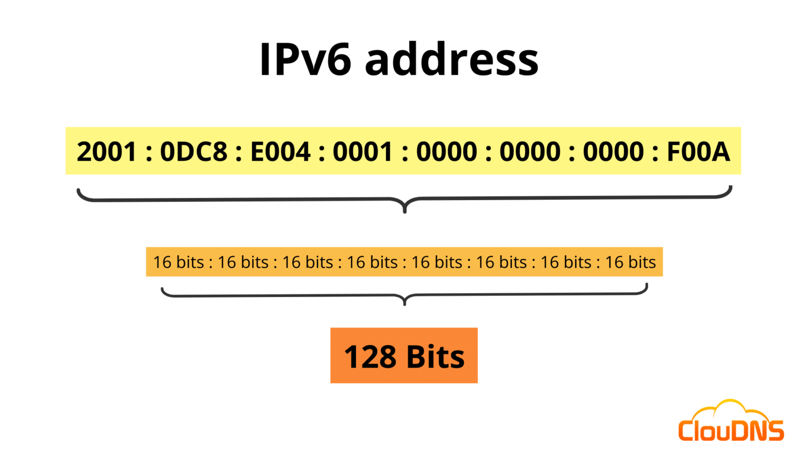
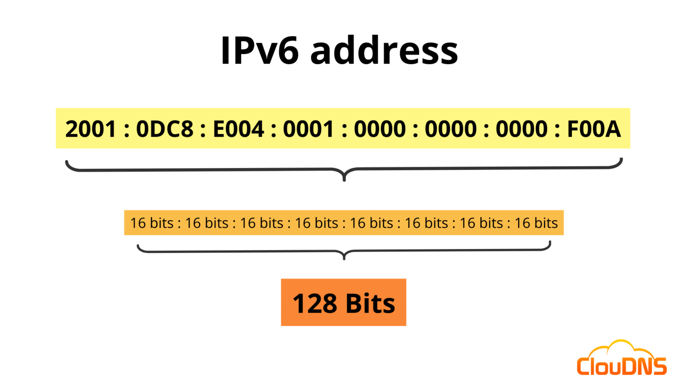

Topics: Internet, Data Transfer, IP, DNS, Ports, MAC, LAN, Routers, IPv4/IPv6, VPN
The Internet is a global system of interconnected networks that uses a common set of protocols (TCP/IP) to allow devices to communicate and share information. It is not a single machine — it's a network of networks: home networks, data-centers, university networks, cloud providers, ISP backbones, etc.
Real-world example: When you open www.example.com, your computer connects (via multiple networks) to the server that hosts that site and downloads the website files (HTML/CSS/JS/images).
Data on the Internet is transferred using packet switching. Large messages are split into small packets. Each packet carries source/destination addresses and sequence information so the receiver can reassemble them.
# send an ICMP ping ping google.com # show route taken by packets (Linux/macOS) traceroute google.com # Windows: tracert google.com
An IP address is a numerical label assigned to each device on a network. It is used to identify and locate devices. There are two main versions: IPv4 (32-bit) and IPv6 (128-bit).
IPv4 example: 192.168.1.10 — dotted decimal format.
IPv6 example: 2001:0db8:85a3:0000:0000:8a2e:0370:7334 (can be shortened).
https://www.example.com) in the browser.IP addresses are globally coordinated by organizations like IANA and regional registries (RIRs). Internet Service Providers (ISPs) allocate public IPs to customers. Inside your home network, the router usually assigns private IPs to devices via DHCP.
DNS is like the Internet's phonebook: it converts human-friendly domain names into IP addresses. Types of DNS records:
Example: example.com —A→ 93.184.216.34

# Linux/macOS: dig dig example.com # Windows: nslookup nslookup example.com
Common problems: packet loss, latency, jitter, corruption. Networks use error checking and retransmission (TCP) to recover lost data. At the local (link) layer, devices have a MAC (Media Access Control) address — a unique hardware ID used on the same local network segment.
MAC format example: 00:1A:2B:3C:4D:5E. You can lookup vendor info from the first 3 bytes.
A port number identifies a specific process/service on a host. The combination of IP + port uniquely identifies a socket. Example: HTTP → port 80, HTTPS → port 443, SSH → port 22.
Common ports: 22 (SSH), 25 (SMTP), 53 (DNS), 80 (HTTP), 443 (HTTPS), 3306 (MySQL)
32-bit address, usually written as four decimal numbers (0–255) separated by dots.
Subnet example: 192.168.1.0/24 means addresses 192.168.1.0–192.168.1.255 with mask 255.255.255.0.
128-bit address with hexadecimal groups separated by colons. Designed because IPv4 address space ran out.
Example shortened: 2001:db8::1 (double colon compresses zeros).
 

MAC addresses are 48-bit values expressed as 6 pairs of hexadecimal digits. Example: AA:BB:CC:11:22:33.
The first half (OUI) identifies the vendor, the second half the device.
Ports are 16-bit numbers (0–65535). Categories:
LAN: A local network in a home/office.
Switch: Works at link layer, forwards frames based on MAC addresses (connects devices inside LAN).
Router: Works at network layer, forwards packets between different networks (e.g., your home LAN to ISP).

Private IPv4 ranges (RFC1918) — these are not routable on the public Internet:
10.0.0.0/8172.16.0.0/12192.168.0.0/16Routers use NAT (Network Address Translation) to map many private addresses to a single public IP for Internet access.
Modern consumer routers combine routing, switching, Wi-Fi access point, firewall, DHCP server and often VPN client/server. They provide a management UI and features like parental controls, guest networks and QoS.
A VPN (Virtual Private Network) creates a secure, encrypted tunnel between your device and a VPN server. It masks your public IP and protects data on untrusted networks (e.g., public Wi-Fi).
Types: Remote access VPN (user ↔ VPN server), Site-to-site VPN (network ↔ network).
Example technologies: OpenVPN, WireGuard, IPsec.

These commands help you explore networking concepts on your machine:
# Show your local IP addresses (Linux/macOS) ip addr show # Windows ipconfig # DNS lookup dig example.com nslookup example.com # Traceroute / tracert traceroute example.com # Linux/macOS tracert example.com # Windows # Find MAC address (Linux) ip link show # Ping to check connectivity ping 8.8.8.8